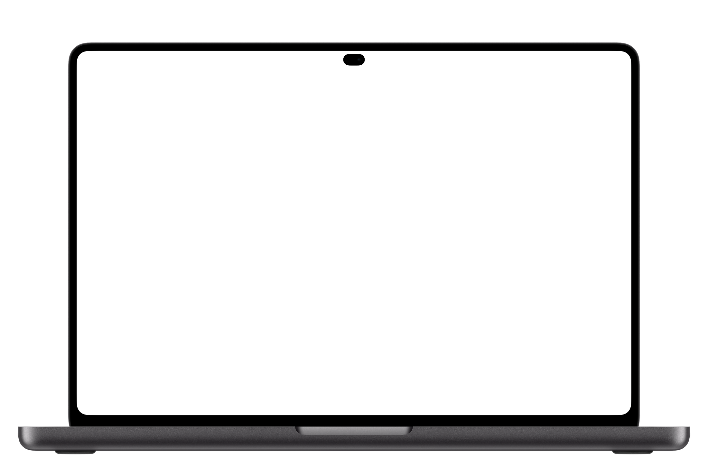

사 놓고 잊어버린 물건,
대신 챙겨 드릴게요
놓치던 순간마다 갈무리가 먼저 알려 줘요. 누르면 바로 처리돼요
갈무리지금
서울우유 1L, 기한이 3일 남았어요다 드셨나요? 아직이면 3일 더 둘게요갈무리12분 전
이마트에 도착했어요계란이랑 두부는 집에 있어요갈무리오전 9:00
LG 코드제로 무상보증이 7일 남았어요끝나기 전에 무상점검을 접수할까요?갈무리어제
에어팟 프로, 지금 팔면 215,000원판매 글은 써 뒀어요. 사진만 찍으면 올라가요물건을 사는 사람이라면 누구나. 소비하는 전 연령을 겨냥하고, 나이마다 다른 고민을 집중해서 풀어요
기한도, 남은 양도, 지금 팔면 받을 값도 같은 모양으로 보여 줘요. 초록 물이 줄어들수록 챙길 때가 된 거예요

컴퓨터: 왼쪽 메뉴, 옆에서 나오는 설정
휴대폰: 한 손으로 넘기는 화면
앱은 무료로 둬요. 쓰는 사람이 많아야 중고가 돌고, 물건이 한 바퀴 돌 때마다 갈무리가 벌어요
앱을 파는 대신 무료로 열어 두고, 더 편하게 쓰고 싶은 사람만 구독해요
0원
월2,900원
월4,900원
갈무리 마켓, 팔기, 수리 접수는 어떤 요금제든 써요. 앱 설정의 요금제에서 바로 바꿀 수 있어요
산 순간부터 다 쓸 때까지,
갈무리가 챙길게요
오늘 보신 미리보기를 실제 서비스로. 넣는 수고는 줄이고, 챙기는 범위는 넓혀요
감사합니다